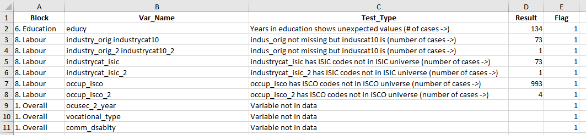

Guide to the GLD single survey quality checks#
This is a guide to the quality checks for the Global Labor Database (GLD). After reading it, users should be able to:
understand what the quality checks evaluate and how they work
run the checks by themselves on a newly harmonized file, and
read and interpret the output
The guide is divided itself in three major sections, one for each learning objective.
Understanding the quality checks#
The GLD quality checks intend to make sure that the GLD harmonized output is of sufficient quality to include the evaluated harmonized survey into the database. This is done in five blocks:
Block 1 checks adherence of the survey data to the GLD formatting requirements (e.g., binary 0/1 variables have no responses outside 0 and 1).
Block 2 compares key indicators from the harmonization to the same indicators from external sources (e.g., ILO, UN), to ensure external consistency.
Block 3 assesses whether major variables are missing.
Block 4 evaluates whether key relationships between pairs of variables align with ex-ante expectations (e.g., individuals occupied as professionals -
occup == 2- chiefly have post-secondary education).Block 5 analyses central aspects of wages to ensure wage/earnings information agrees with stylized facts on wage behaviour (e.g., lower skilled workers’ wages are, on average, lower than those of high skilled workers).
The next subsections discuss each block in more detail. We start, however, with the overall quality checks template.
Overall quality checks template#
The overall quality checks template is the only do-file the user needs to interact with regularly. It defines al relevant arguments and calls the do-files that run blocks 1 through 5. The code is accessible here and shown below:

The quality checks template proceeds in three steps. Step 1 readies Stata by cleaning up any data that may still be stored in the memory. Step 2 defines the arguments. It is the only section requiring user input. Users need to define three globals.
helper: Define the path to the folder that contains all the files that run the quality checks (here, folder Helper_programs_1.5). It is recommended to have this be a central place so it applies to all surveys and can easily be updated if the quality checks are amended.mydata: Define the path to the harmonized data the user wishes to check.output: Define the path to the folder the user wants the output to be stored in. It is recommended to make this theCCC_YYYY_SURV_V0#_M_V0#_A_GLD/Work/Outputfolder for consistency so other users may always know where to find the checks output.
Step 3 simply calls the do files from the helper path running the checks. This step no longer requires user involvement. It does, however, run through all the files that make up the checks. What these cover is the subject of the next section.
Block 1 - GLD format checks#
This block (with all files starting with B1) is concerned with ensuring that the harmonized output conforms to the GLD data dictionary. The code for the format checks is divided into sections (overall checks, demography checks, education checks, …) and should be commented enough for users to understand what each step is doing. If you feel more explanations are warranted, please raise and issue detailing the part not understood and we will endeavour to expand on it.
Broadly, the checks first evaluate whether the survey is set up correctly: filenames follow the naming convention and variables are from the data dictionary.
Once this is established, the checks go through variables and, if they are in teh data, investigates whether they are in line with formatting rules. Some examples are:
Check if vintages of survey (
vermast/veralt) agree with the filename vintages (e.g., if file isCCC_YYYY_SURV_V01_M_V02_A_GLDveraltneeds to be"02").Check there is a single household head per household.
Check that categorical variables have answers exclusively within the realm of feasible answers.
Check that ISCO/ISIC codes are in the universe of possible codes for the pertinent classification (e.g., in ISIC 3 codes starting with
45may only have either0or1through5as third digit; anything else would be outside the possible universe and flagged).
The format checks creates a list of flagged issues. It is stored as a .dta file in the Block1_Format folder (file CCC_YYYY_Other Household Survey_Q_Format_Checks.dta), and as an Excel spreadsheet in the 01_summary folder (file B1_format_results.xlsx). Below is a screenshot of the spreadsheet output:

As shown, the output has five columns:
Column Block describes the data dictionary block the variable causing the flag belongs to (demography, education, …).
Column Var_Name denotes the name of the variable flagged.
Column Test_Type describes the kind of test the variable has undergone.
Column Result denotes the number or share of cases with the issue (if this can be written).
Column Flag guides the reader whether the issue is at odds with the data dictionary (
Flag = 1) or technically possible, yet odd (Flag = 99).
Block 2 - GLD external checks#
Block 2 is the most extensive block, covering - at the moment - 9 files, all starting with B2. These can be further subdivided into two groups.
The first group, files B2.01 to B2.04 creates the GLD and external indicators for demography (B2.01), labour market (B2.02), and wages (B2.03). The external indicators are taken from WDI, ILOSTAT via dbnomics, and the UN, also accessed through dbnomics. File B2.04 to unites all single indicator based files B2.01 to B2.03 created into a single database and creates flags to highlight the cases where the GLD indicators are too far off from what the external sources would predict. “Too far” is measured as not having overlapping 10% bounds around the point estimates. In more detail, first the upper and lower bound as 10% above or below the GLD estimate is created. Subsequently, the mean of all used external estimates is taken and a bound 10% above or below is created. A GLD indicator is flagged if its upper bound is below the external lower bound or the lower bound is above the external upper bound.
The second group of files, files B2.05 to B2.10 draws the results for visual inspection. File B2.05 creates figures for the data from B2.01, while B2.06, B2.07, and B2.08 draws the data from B2.02. B2.09 draws the wage data from B2.03. Finally, B2.10 creates a panel of flagged figures, based on the file created by B2.04.
The first group files store data in the output’s “Block2_External/01_data” folder, while the figures are stored in the “Block2_External/02_figures” folder. Additionally, a panel of all flagged figures is stored in the output’s “01_summary” folder, along with an Excel file detailing all checks. A separate document here details more fully the process of external checks along codes used for external sources.
Block 3 - GLD missing checks#
Block 3 records the share of responses that are missing for a series of variables. For variables age, male, and urban, the code evaluates if any answers are missing. For variable lstatus it is evaluated whether there any responses missing for those above the minimum age to respond to the labour module (variable minlaborage). Finally, variables empstat, industrycat4, wage_no_compen, and unitwage are checked for missing answers only for those employed (i.e., with lstatus == 1).
The code outputs the data in “Block3_Missing/01_data” and places the figure directly in the “01_summary” folder in the user designated output folder.
Block 4 - GLD bivariate checks#
The bivariate data checks look at combinations of two or more variables and raise a flag when the expected behavior of the data under these combinations is violated.
There are two groups of bivariate checks. The first group consists of three checks and looks at the conversions of a certain variables. The idea behind these three checks is that we have different versions of a particular variable (say “education” is a categorical variable that can present 4 levels, 5 levels and 7 levels), and we want to make sure that the correspondences are correct. This should be true mechanically, and these checks will confirm that it is the case.
The second group of bivariate checks look at relationships between two variables and raise a flag with the relationship is different from what we expect. Consider, for instance the variables education and age. Common sense tells us that we should expect the number of children under 12 years old with postgraduate education to be very low. Hence, there is a check that computes this share, and flags it if it is above certain threshold. If many children appeared in our data with post-secondary education, we would need to make sure that the variables are correctly harmonized. Therefore, bivariate checks can be useful to identify potential errors in the harmonization process.
In the next section, we list 8 groups of variables. The first three sections explain the cross-categories consistency checks while the latter five sections explain the bivariate checks conducted on pairs of variables.
Combinations of GLD variables checked#
Education: cross-categories#
The GLD data includes three different education variables: educat7, educat5 and educat4. These are categorical variables with different number of levels: educat4 classifies education in 4 groups, educat5 does so in 5 groups, and educat7 in 7 groups.
We expect these three variables to be coherent. That is, if an individual has completed primary education, all three variables should reflect this information.
Hence we construct a table with the equivalences between these variables (in the Appendix), and raise a flag when the data deviates from them.
Industry: cross-categories#
This check follows the same structure as the “Education: cross-categories” check, with the variables industrycat_isic, industrycat10 and industrycat4.
The appendix contains a table with the correspondences that the code checks for. Notice that these follow the Version 4 of ISIC. Whenever the GLD data follows a different version, or the version is not indicated in the GLD database, this check is skipped.
Occupation: cross categories#
This check looks at the conversion of the occup_isco, occup_skill and occup variables.
The correspondence between these variables follows the ISCO version 1988, listed in the appendix.
Whenever the data presents a different conversion, a flag is raised. If the data follows a different ISCO version, or if the version is not known, the check is skipped.
Labor force versus employment#
This check looks at the joint distribution of the variables lstatus and empstat. By definition, when lstatus equals “Employed”, empstat should contain information. If lstatus is either “Unemployed” or “Not in LF”, then empstat should be missing.
Whenever this rule is not followed in the data, a flag is raised.
lstatus versus age#
This check looks at the joint distribution of lstatus and age. To make the check easier, we recode the variable age into a categorical variable with 5 groups, defined as follows:
Child, if an individual is between 0 and 14 years old
Youth, if an individual is between 15 and 24 years old
Adult, if an individual is between 25 and 54 years old
Senior, if an individual is between 55 and 70 years old
Retiree, if an individual is between 71 and 120 years old
We compute the join distribution of age and lstatus, and raise a flag whenever the data violates one of the following 6 conditions:
Child must be > 90% non_lf + missing
Youth must be mostly >50% non_lf
Adults must be mostly >50% in lf
Seniors must be in the lf at a lower rate than adults
Retirees must be non_lf >80%
All empstat groups should be >0 for working age people
Education versus age#
This check looks at the joint distribution of education (as defined by educat4) and age (as re-defined in section 2.5), and raise a flag whenever one of following 3 conditions are not met in the GLD data:
Children should be no_ed & primary > 90%
Primary, secondary and post secondary should no be 0 for youth+
For all age groups, no education level should be 100%
Industry versus occupation#
This check considers the join distribution of industrycat4 and occup, and raises a flag when any of the following 15 conditions is violated:
Managers should be not be prevalent in agriculture, <20%
Professionals should be low in agriculture, <10%
Professionals should be mainly in services, >60%
Technicians should be low in agriculture, <10%
Clerks should be low in agriculture, <10%
Clerks should be mainly in services, >60%
Service and market should be low in agriculture, <10%
Service and market should be almost only in services, >80%
Skilled agricultural should be almost only in agriculture, >80%
Craft workers should be low in agriculture, <10%
Craft workers should be mainly in industry, >60%
Machine operators should be low in agriculture, <10%
In all ocupp, other should be low, <25%
In any ocupp, no industry should be exclusive, 100%
In any occup, not all industries should not be missing, (.)
Occupation versus education#
This check looks at the joint distribution of occupation and education, as measured by occup and educat4.
A flag is raised whenever one of the following 6 conditions is not met:
Professionals with no_edu should be low, <10%
Professionals should manily have post_sec, >60%
Technicians with no_edu should be low, <10%
Clerks with no_edu should be low, <10%
Machine operators with post sec should not be prevalent, <20%
Elementary occupations with post sec should be low, <10%
Output produced#
Each of the 8 checks described above produces a file with the key data used to conduct a check (a list of correspondences or a joint bivariate distribution), as well as a sequence of 0s and 1s indicating if the conditions are met. If any of the required conditions is not met, a string variable explaining the reason behind the flag is created. Additionally, a file is created listing all flagged issues. All files are stored under “Block4_Bivariate/01_data”
The code stores in the “01_summary” folder, an extra file called “B4_bivariave_results.xlsx” “bivariave_results.xlsx”. This file contains a list of cases in which a flag has been raised, and will be empty when the data does not raise any flags.
Block 5 - GLD wage checks#
The goal of this section is to look at the GLD wage data (wage_no_compen variable for those with empstat == 1), and to use this information to detect potential harmonization errors.
We compute 4 series of wages: by education, by occupation, by industry and by age, and flag a series whenever the wage behaves differently than expected. Note than in all cases, we convert the wages to hourly wages.
Wage series & checks#
Wage by education#
To compute wage by education, we use the education variable educat4, a categorical variable that takes 4 values. We expect wages to be increasing in education, and we flag the series when this is not the case.
Wage by occupation#
To compute wage by occupation, we use the education variable occup_skill, a categorical variable that takes 3 values. We expect wages to be increasing in skill level, and we flag the series when this is not the case.
Wage by industry#
To compute wage by industry, we use the education variable industrycat4 skill, a categorical variable that takes 4 values, of which we consider 3: agriculture, industry and services. We expect wages to be highest in services, followed by industry and finally agriculture. We flag the series when this is not the case.
Wage by age#
To compute wage by age, we use a re-coded version of the age variable, which classifies population in 5 groups: child (0 to 14 years old), young (15 to 24 years old), adult (25 to 54 years old), senior (55 to 70 years old) and retiree (71 to 120 years old). We expect wages to increase until adulthood, and we expect wages of retirees to be lower than wages of senior people. We remain agnostic about how wages for adults and for seniors compare. We flag the series when these rules are violated.
Output produced#
Regardless of the results of the checks, we produce the following two pieces out output:
A small database for each wage series, with a binary variable indicating if any condition is violated. These are stored in “Block5_Wage/01_data”.
A pdf image consisting on four figures, one for each series. This file can be found in “Block5_Wage/02_figures” and “01_summary”. The graphs are colour coded. When the series is depicted in blue it conforms with our ex-ante expectations. If the line is drawn red, the series raises at least one flag.